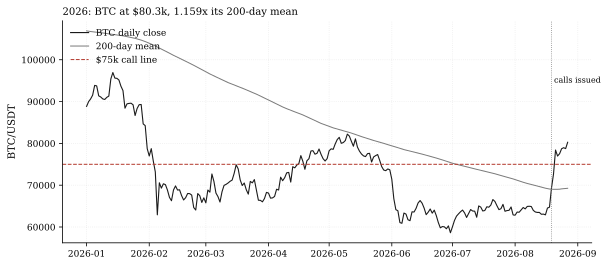
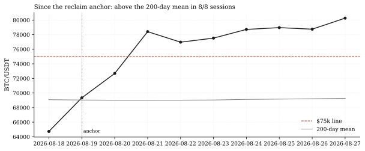
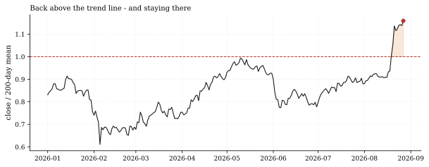

The one-paragraph version. The two fastest-moving calls on the Track Record look settled. The reclaim call (crypto-btc-reclaims-200d, issued 2026-08-19) required BTC back above its 200-day mean within 120 sessions: all 8 window sessions since its anchor have closed above it. The conviction call (crypto-btc-holds-75k, issued 2026-08-22) required a close above $75,000 within 10 sessions: all 5 window sessions have, starting at $77,525 on August 23. BTC prints $80,264 as of Thursday - 1.159x its 200-day mean ($69,258), 7.0% above the $75,000 line, and 27.8% off the August 1 low of $62,820. The grader still shows both calls "open" by design (it grades once, at maturity, one-way), but on current data both conditions are satisfied.
How we worked this problem
This is Crypto Microscope issue 4 and a resolution report on both BTC calls. Both series are built exactly as the grader builds them - 1h OKX bars resampled to daily closes, the 200-day mean on that series, and the fixed $75,000 level - so every number reconciles with the Track Record to the decimal. Two disclosure items the reconciliation surfaces. First, the reclaim call's frozen prose said "BTC - $64,613 and below its 200-day daily mean at issue": that price was the drafting cut (the ten sessions before issuance printed a $62,904-$64,899 range), but by the anchor session's close ($69,337 on August 19) BTC was already marginally back above the mean at 1.004x - the reclaim was effectively done the day the call was written, and the window then confirmed it 8-for-8. Second, the $75,000 call's anchor close ($76,971) was itself above the line; the grader counts sessions strictly after the anchor, and all 5 have cleared it. We report both facts rather than let the prose's drama stand in for the window's arithmetic.
The data audit
| Source | Coverage | As-of | Role |
|---|---|---|---|
data/ccxt_1h/BTC_USDT_okx1h.parquet | BTC/USDT 1h bars, 2019-2026 | 2026-08-28 11:00 UTC; complete days through 2026-08-27 | daily closes, 200d mean, call windows |
articles/calls.json | both BTC call terms | registry as of this run | anchors, levels, deadlines |
The FRED rates cache (as-of 2026-08-13) and the funding cache (as-of 2026-07-31) are not used.
The external read
The breakout's drivers per outside coverage: US debt worries, spot-ETF inflows and a weaker dollar fueled the rebound past $80,000 (Morningstar, Aug 26), on top of the short-squeeze cascade our issue-2 note documented at its inception. Our cross-check: the six-week $62,000-$66,900 consolidation range cited in outside technical commentary (CoinDesk) matches our recomputed pre-break range's neighborhood (the last ten pre-issue sessions printed $62,904-$64,899), and the multi-month-high timing is exact on the house series: no daily close reached $80,000 between May 14 and Thursday (Morningstar, Aug 26).
Exhibits
Exhibit 1 - the year in one picture. BTC's 2026 path against its 200-day mean and the $75,000 call line: the long basing below the trend line, the August breakout, and Thursday's $80,264 close at 1.159x the mean.

Exhibit 2 - the windows. Since the reclaim anchor (August 19): 8-for-8 sessions above the 200-day mean, including the August 22 giveback day (-1.8%, $76,971) which held above both lines. Since the $75,000 anchor: 5-for-5, opening at $77,525.

Exhibit 3 - the trend-line ratio. BTC's close-to-200d-mean ratio across 2026: the below-trend stretch that prompted the call, the reclaim, and the current 1.159x - 2026's highest reading (set Thursday).

So what - opportunities
- The Track Record's first pending hits: when the maturity dates
- The base-out structure is the lesson: the reclaim call was drafted
- For the crypto book: BTC back above its 200-day trend with the
arrive (the $75,000 call's window closes within days; the reclaim call's on 2026-12-17), the grader will score on data, and both windows are currently clean sweeps. Two hits from one regime move - the calls were designed to be falsifiable, and they will resolve as designed.
at the range's edge ($62,904-$64,899 pre-break) - where falsifiable claims carry the most information - while the $75,000 conviction call followed three sessions into the break, a cheaper test by construction.
range broken upward is the regime state the crypto members' reversal-and-trend constructions were certified across; the live crypto sleeve's environment has shifted.
So what - risks
- "Settled" is not "graded": the grader scores once, at maturity -
- The anchor-already-above subtlety cuts both ways: the reclaim
- Squeeze-driven rallies retrace: our issue-2 note's own risk
but under its any-hit, one-way semantics both calls have already banked clearing sessions (the reclaim window's first session cleared the trend line; the $75,000 window's first cleared the level), so each grade is arithmetically locked; the remaining window sessions only delay the formal stamp.
call's prose described a below-mean BTC that no longer existed at the anchor; had the anchor closed a fraction lower, the same call would have needed a genuine reclaim. Registrar precision matters more than prose drama.
section said failure back into the range re-imposes the old regime; the +27.8% off the low has retraced nothing yet, and squeeze legs often give back the break.
Machinery: how this piece was produced
articles/2026-08-27-btc-squeeze-settles-calls/analysis.py builds both grader-identical series (1h bars resampled to daily closes; the 200-day mean; the fixed level), reads both calls' terms from articles/calls.json, computes the window statistics, and writes every number above to assets/numbers.json plus the three figures (SVG + PNG twins).
Reproduce with: ``bash .venv/Scripts/python articles/2026-08-27-btc-squeeze-settles-calls/analysis.py ``
Limitations
- Daily closes from 1h bars (the grader's construction); intraday
- The pre-break range ($62,904-$64,899) is the last ten sessions before
- Both calls remain formally open until their maturity dates; this note
- The series here trims trailing PARTIAL UTC days (fewer than 20 of 24
- The prose-vs-anchor price gap ($64,613 prose vs $69,337 anchor close)
spikes above/below the lines are not what either call grades.
the reclaim call's issue date - a window choice, not the full six-week base cited externally.
reports the window arithmetic, not the grade.
hourly bars) so every quoted "close" is a complete day; the grader resamples whatever the parquet holds at grading time, partial days included.
reflects the drafting cut; the call's terms are frozen as issued.
Sources - external reading list
| Claim | Source |
|---|---|
| Rebound drivers past $80,000: US debt worries, spot-ETF inflows, weaker dollar | Morningstar - Why Bitcoin Surged to $80,000 |
| Six-week $62,000-$66,900 consolidation range / short-squeeze cascade | CoinDesk (issue-2 lineage) |
calls-grader-parity; pandas; matplotlib